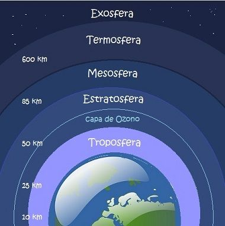
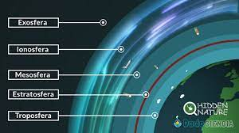
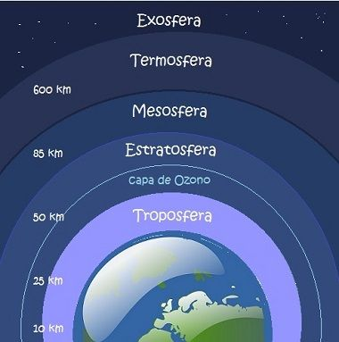
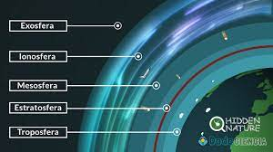
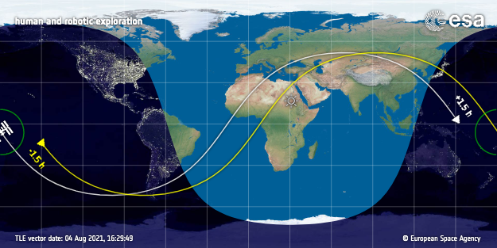
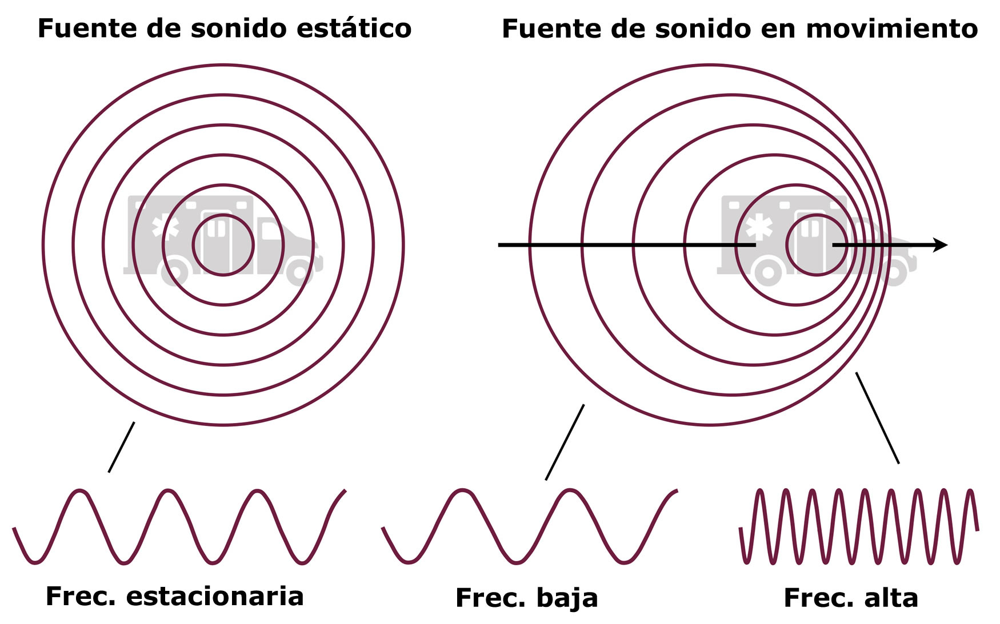

El sol es una bola de plasma o gas súper caliente cargado eléctricamente que gira a diferentes velocidades en sus diferentes partes. Sus fuerzas electromagnéticas mantienen la vía Láctea girando a su alrededor.
La temperatura del núcleo es de 27 millones grados Fahrenheit y la temperatura de la superficie es de 4.000 grados Fahrenheit. El periodo de rotación en los polos es de 36 días terrestres y el periodo de rotación respecto a su ecuador es de 27 días terrestres. Su diámetro aproximado es de 864.000 millas con edad de 4.500 millones de años. Con una distancia de 93 millones de millas de la Tierra es la estrella más cercana que podemos estudiar.

En su ciclo de 11 años hay periodos de actividad donde la superficie expulsa prominencias solares, erupciones solares y eyecciones de masa coronal, las dos últimas llegan a la Tierra y afectan su atmósfera. En los periodos de menor actividad predominan las manchas solares, con temperaturas de 3.272 grados Fahrenheit.

Los cambios se deben a las fuerzas electromagnéticas producidas por la fusión nuclear que ocurre en su interior. Donde 4 protones de hidrogeno se fusionan para formar un núcleo pesado de helio, dos positrones y 26 mega electronvoltios de energía, claro que en el sol es a gran escala. Así el 99% del sol es compuesto de hidrógeno y helio.
 




La ionosfera es la capa más externa de la atmosfera con temperatura de 2.732 grados Fahrenheit. La interacción de los rayos ultravioleta y rayos x provenientes del sol con los gases de nitrógeno, oxigeno, argón, vapor de agua y dióxido de carbono producen una gran ionización. Sus cargas eléctricas libres se reflejan en ondas de radio, así como el Sol se refleja en la Luna, aquellas se pueden detectar con medidores de ondas electromagnéticas para estudiarlas.

La ISS (Estación Espacial Internacional) es el único laboratorio de micro gravedad que orbita la Tierra. En 24 horas realiza 16 órbitas de la Tierra, viaja a 17.500 millas por hora, su órbita tiene una inclinación de 51,6° y es visible en ese rango porque refleja la luz del Sol.

Gracias a la Expedición 60 se han hecho 3.000 investigaciones de 108 países diferentes, puede llevar instrumentos de 20 investigaciones a la vez. Cinco agencias y 15 países operan con un software en órbita que monitorea 350.000 sensores para garantizar su seguridad. Es del tamaño de casi un campo de fútbol, tiene 6 dormitorios, 2 baños, un gimnasio y un ventanal con vista de 360°.
Las naves de carga que entregan ciencia, carga y suministros son, Cygnus de Northrop Grumman, Dragon de Spacex, HTV de Jaxa, Russian Progress. Además, se puede llevar 4 horas llegar después del lanzamiento de la Tierra. Hay 50 computadoras en su interior que interactúan con 44 computadoras y 100 redes de datos para recibir hasta 400.000 señales. Tres millones de líneas de código de software en Tierra soportan 1,5 millones de señales provenientes de la estación.

Gracias a la Expedición 60 se han hecho 3.000 investigaciones de 108 países diferentes, puede llevar instrumentos de 20 investigaciones a la vez. Cinco agencias y 15 países operan con un software en órbita que monitorea 350.000 sensores para garantizar su seguridad. Es del tamaño de casi un campo de fútbol, tiene 6 dormitorios, 2 baños, un gimnasio y un ventanal con vista de 360°.
Las naves de carga que entregan ciencia, carga y suministros son, Cygnus de Northrop Grumman, Dragon de Spacex, HTV de Jaxa, Russian Progress. Además, se puede llevar 4 horas llegar después del lanzamiento de la Tierra. Hay 50 computadoras en su interior que interactúan con 44 computadoras y 100 redes de datos para recibir hasta 400.000 señales. Tres millones de líneas de código de software en Tierra soportan 1,5 millones de señales provenientes de la estación.

Sus investigaciones estudian el espacio y sus posibles efectos en la Tierra, por lo que el estudio de la ionosfera, el sol, clima espacial y demás nos concierne a todos. La belleza fuera de lo que pueden percibir nuestros sentidos siempre estará esperándote para que la descubras. Parker toco el sol, ¿porque tú no?